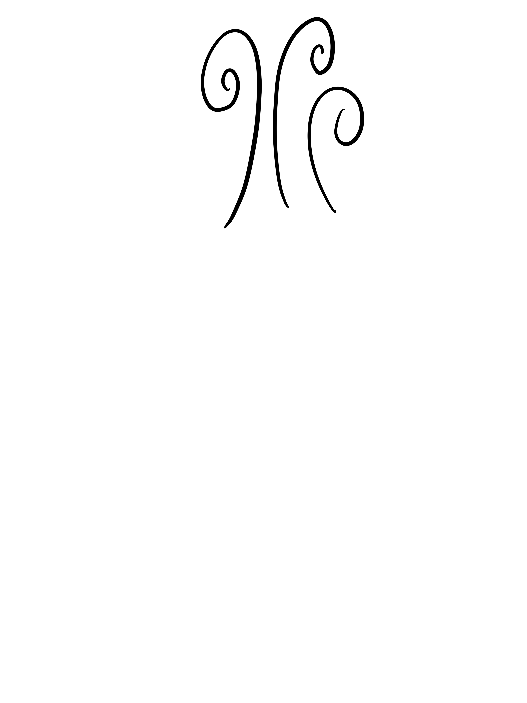

step 1: Watch a happy video
step 2: Say this affirmation outloud: “I am brave. I am smart. I am strong. I can get through anything that comes my way and I will make it through.”
step 3: Do this 5 minute brething exercise to (attach youtube video)
step 4:Open curtains or blinds
step 5: Go grab tea, coffee or just a glass of water and a delicious breakfast of choice

step 6: Journal for 5 minutes What is making you feel sad today? Is this a temporary pain or will it take time ot heal? What will make you feel happier today? Write down those things and try to do them!
step 7: Wash your face Washing your face helps you to cool down. If you cool off your face, you will likely feel refreshed and better.
step 8: Brush your teeth
step 9: Say outloud, "I can do this!" and then get going with your day